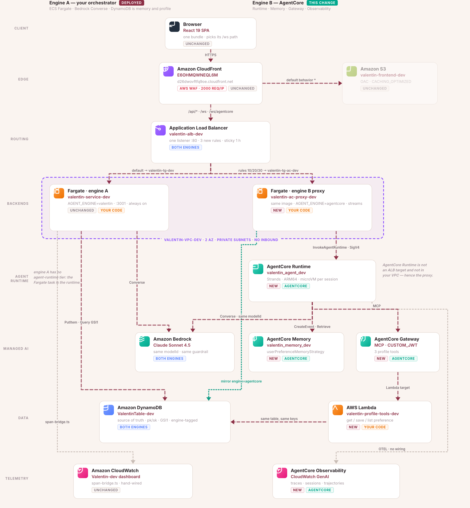

Built twice — once by hand, once on Bedrock AgentCore.
The details arrive in conversation, months before they matter — and "anniversary" on the day is too late. So: extract, remember, act early.
Claude Sonnet 4.5 on Bedrock, in character.
Preferences extracted into eight categories.
You choose the lead time — a month, a week, a day.
Real email: restaurants, a playlist, a link to confirm.
Why an agent and not a form with a cron job: unstructured input over weeks, a plan whose next tool depends on what came back, and a human in the loop before anything sends.

One URL, two engines, switchable from the UI. Same model, same guardrail, same table — so every difference is the platform.
The next four slides each light up one of these boxes.

d26dwovftfq9oe.cloudfront.net
Five AgentCore components replaced five things I had written. Each row below is one of them — and the next four slides take one row each.
| Dimension | Component | Engine A — my glue code | Engine B — AgentCore | Who wins |
|---|---|---|---|---|
| Cost | Memory | A 2nd Bedrock call per turn to extract preferences | Extraction inside the Memory rate — no model call of mine | B · 13.5× |
| Tool use | Gateway | 20 TypeScript functions called in-process; no authorization boundary | Same 20 over MCP, two Lambda targets behind a CUSTOM_JWT authorizer |
B · boundary |
| Resilience | Runtime | One Node process holds every session — one heap, one event loop | One microVM per session, per-second billed | B · blast radius |
| Security | Identity | One task role does everything; the guardrail is applied by my code | Workload identity per runtime, two scoped machine clients, same guardrail | Tie on policy, B on identity |
| Observability | Observability | span-bridge.ts — spans I emit by hand |
OTEL traces, sessions and trajectories with no wiring | B · minus one manual switch |
The model, the guardrail and the DynamoDB table are identical on both sides. If any of the three differed, none of these rows would mean anything.
AgentCore is more expensive on three of the four layers. It still cuts the bill 13.5×, because the fourth layer is 99.9% of what a turn costs.
| Users | Engine A | Engine B | Ratio | Saved / month |
|---|---|---|---|---|
| 1 | $19.41 | $0.10 | 187× | $19 |
| 10,000 | $13,877 | $1,029 | 13.5× | $12,848 |
| 1,000,000 | $1.39 M | $103 k | 13.5× | $1.28 M |
187× is Fargate's fixed $18 with nobody using it; 13.5× is the real number. And the honest risk: if Memory billed retrieval per record instead of per call, engine B would be 3.8× worse — one line item, opposite conclusion.
The same 20 tools, reached two ways. Engine B's version can answer a question mine cannot: did the model do this, or did the app?
Ontopo, Amadeus, Google, Spotify, Hebcal, Wolt. Live APIs.
It plans around real constraints instead of inventing them.
Every write returns a card she confirms.
Profile tools and integrations, both over MCP.
CUSTOM_JWT, the only inbound modeconfirm_* hidden from the modelSchemas are generated from the tools and a unit test fails on drift, so the two
engines cannot disagree about what a tool accepts. exceptionLevel: DEBUG passes the
tool's own validation error back to the model instead of a generic failure.
Forty live sessions on each side. One process-level fault.
Forty WebSockets, one heap, one event loop.
of 40 sessions lost
Forty isolated execution environments, ARM64, billed per second.
of 40 sessions lost
Node exits, taking all 40 sockets with it.
One runaway conversation exhausts the 1 GiB task.
One hot spot stalls the single loop.
Reaches a singleton holding everyone's credentials.
Honest: a Runtime cannot be an ALB target, so this deployment still fronts it with one shared proxy task. The right panel is what Runtime gives you — not yet what this repo deploys.
One guardrail, applied by both engines — that is what makes the comparison mean anything. What AgentCore added was identity, not policy.
workload-identity/valentin_agent_*ApplyGuardrail granted separatelyInvokeModel — the policy is its own permissionAt HIGH, SEXUAL blocked "her ring size is 6" — a field the agent asks for.
ADDRESS read "saving for Kyoto" as an address.
Every write awaits a human yes.
ALB listener is HTTP · Cognito not enforced · secrets populated by hand.
NAME, AGE and EMAIL are deliberately not
blocked — they are this agent's subject matter. Every decision is a dated comment in
safety-stack.ts.
Product intent, final say, veto. Wrote none of the application code.
Decomposes, delegates, reviews, merges — and posts the last word.
Contracts and shared types. Writes the spec before anyone branches.
Components, hooks, state. Cannot touch shared types.
API, extraction, persistence. Cannot touch the client.
Tokens and accessibility. Eight mockups, one shipped.
Playwright E2E. Cannot touch src at all.
Disjoint ownership is what makes five agents editing at once something other than a merge-conflict generator.

49 merged, 7 closed without merging.
+35,531 lines, 438 files touched.
The two longest threads argue.
The biggest lane is the methodology, not the app.
Generated from the repo's PR history, so it can't drift.
32 of 57 PRs went into the agents, hooks and merge gate. Budget for building the process.
187× collapses to 13.5× once fixed costs amortise. The durable win is one microVM per session.
Stuck in a loop, more of the same model didn't help — a stronger planner did. Model choice is per-phase.
Engine B was green for weeks and had never served a turn. Four faults, each hiding the next.